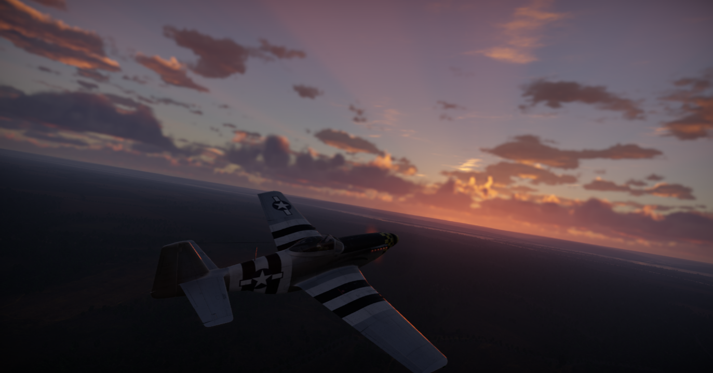
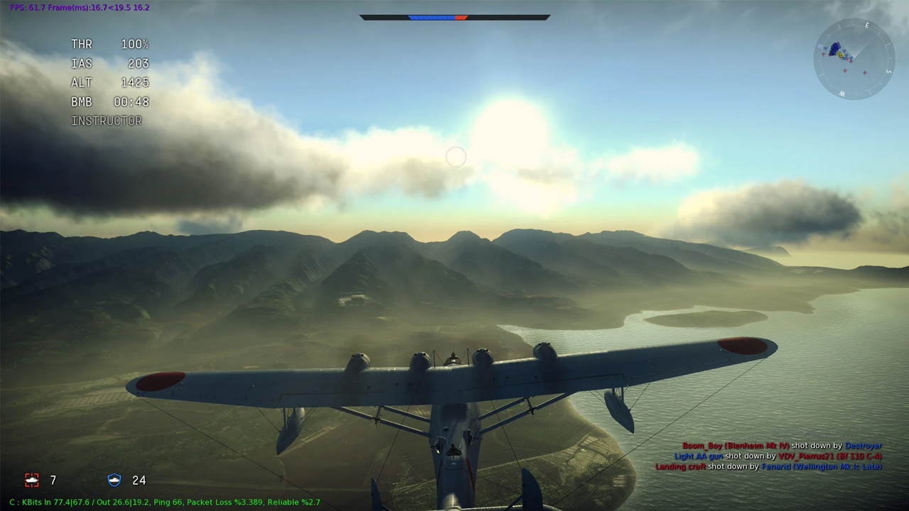
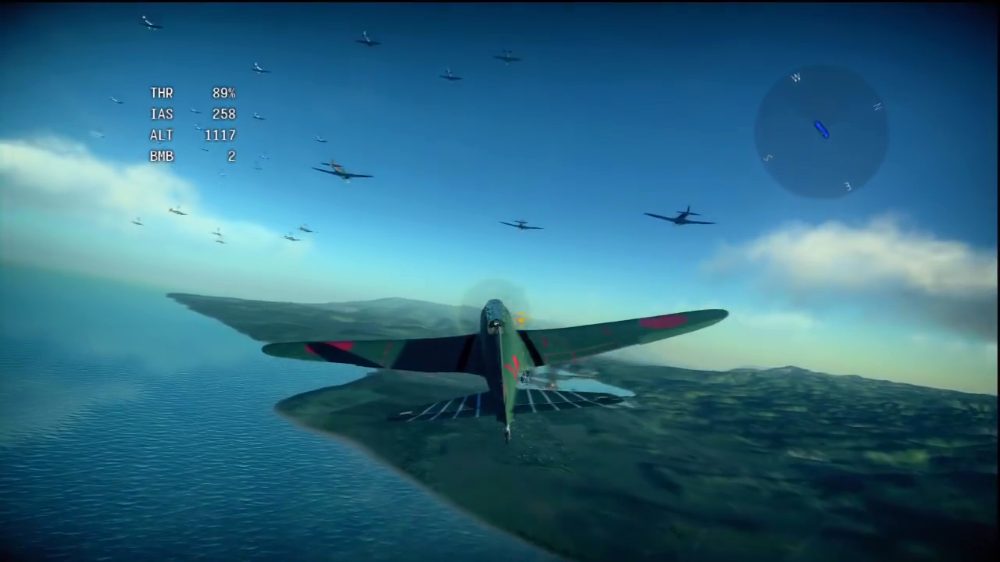
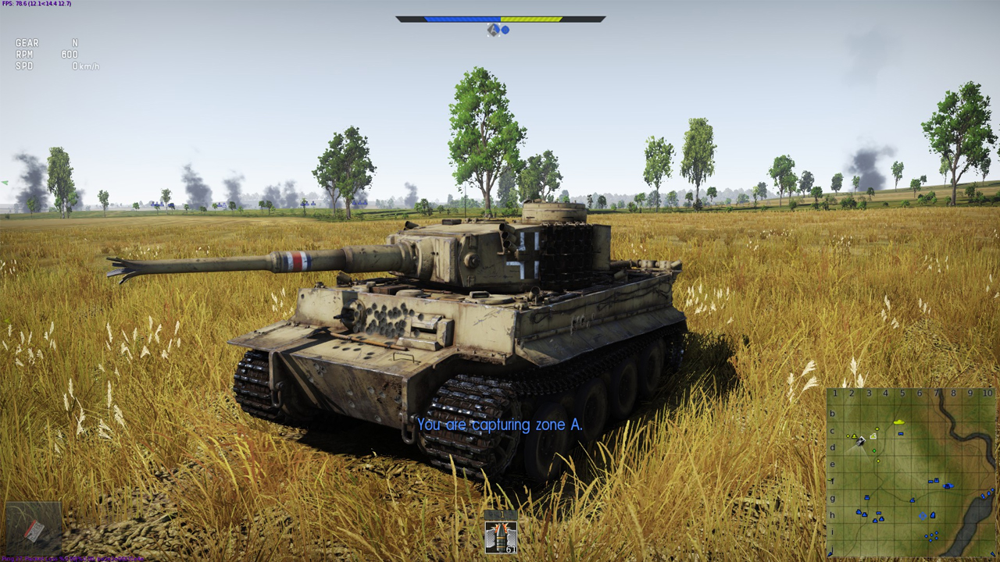
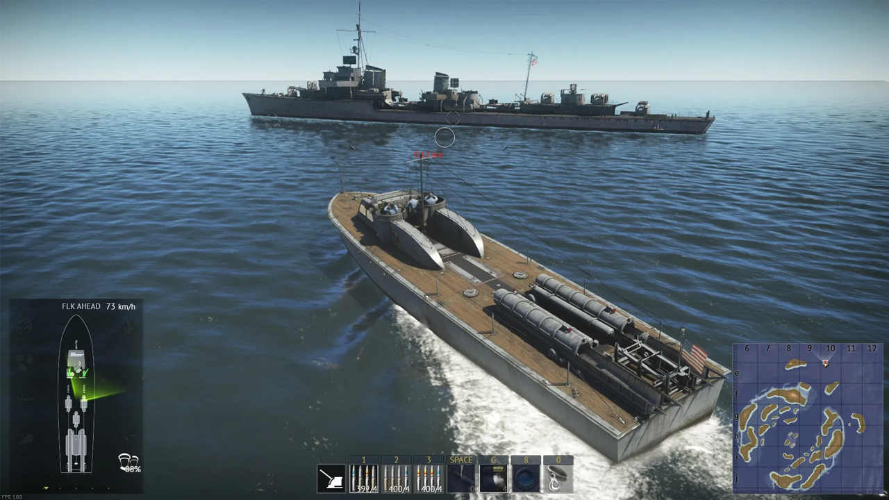
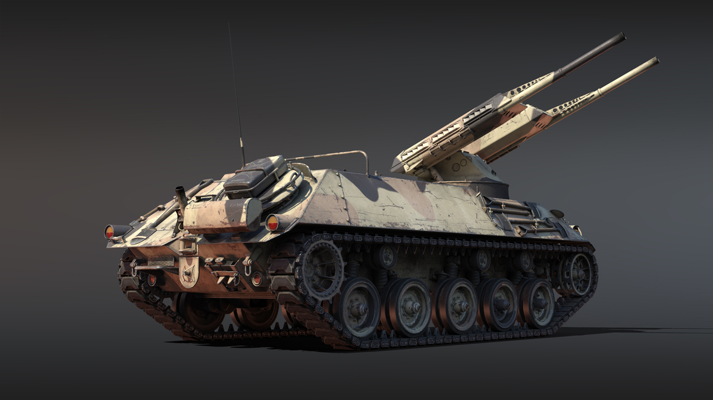

The game is running on Dagor Engine 6.5 which
allows the developers to have so good graphics.
and visual effects First official worldwide release was in January 2013. But this is not where
it begins. We must go back to March 2012.In 2012 Gaijin released game named Birds Of Steel. And this was a dad of today War Thunder. But there were only planes. Same as first two years of War Thunder.After 2 years when this game become popular they added tanks with update 1.41. It became one of the biggest tank game with only one big competiton: World of Tanks.In 2018 they introduced Navy. Whole new gameplay experience so they can compete World Of Warships.Then maybe few people think the game is dead. But in late 2020 they introduced new update. WAR THUNDER 2.0. With this update the game started using Dagor 6.0. They added the nuke. And a lot of new vehicles. Basiclly they revive the game.Now after almost 11 years War Thunder still gets new updates and big updates every 3 month (with new vehicles, maps, effects, etc.). More than 10 million people played War Thunder.